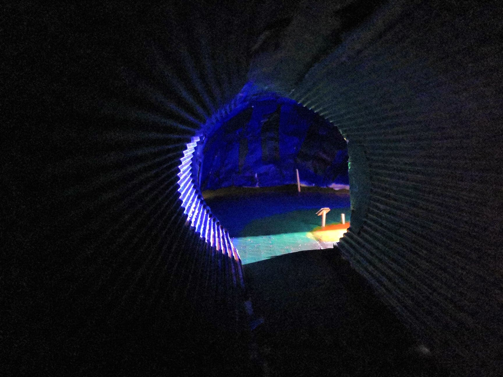
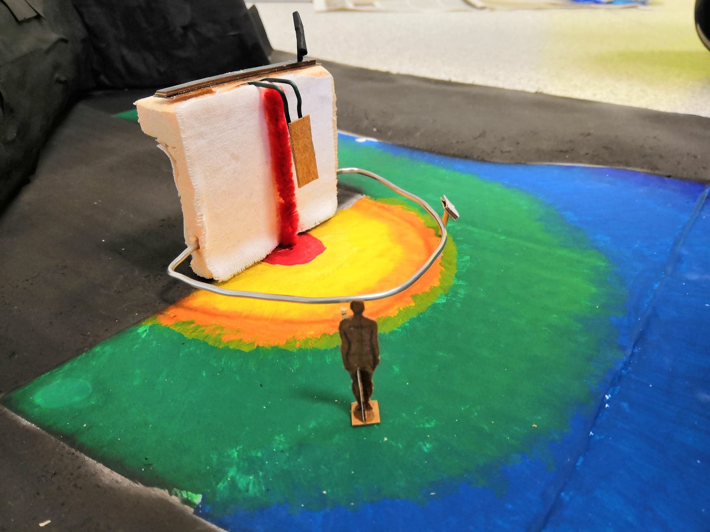

Projet Pluridisciplinaire

La scénographie
Lors de la semaine de projet pluridisciplinaire, nous avions pour but de concevoir en binôme un mini-site qui aurait pour but de donner envie aux visiteurs du site de se déplacer à la scénographie que nous avons imaginés pour une oeuvre.
Nous avons choisis l'oeuvre Message III de Toshiko Tanaka et nous avons imaginé cette scénographie. (photos ci-dessous)
 Le mini-site
Nous avons conçu un mini-site qui permet d'entrer dans l'univers de l'oeuvre afin d'inciter les visiteurs du site à se rendre à l'exposition. Nous avons montré subtilement certains éléments de l'oeuvre mais le visiteur ne s'en rendra compte qu'une fois avoir vu l'oeuvre réelle.
Les animations présentes sur le site ont pour but de commencer à comprendre les enjeux de l'oeuvre.
Ci-dessous la navigation du mini-site en vidéo